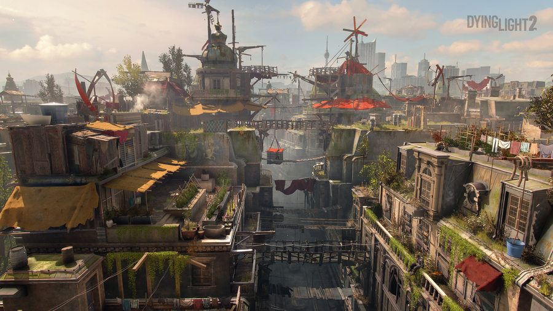
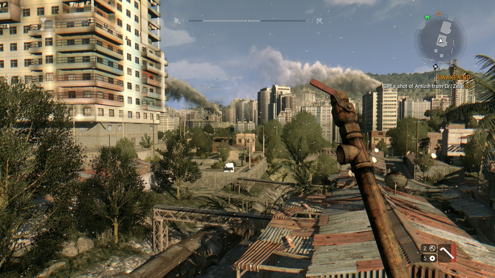
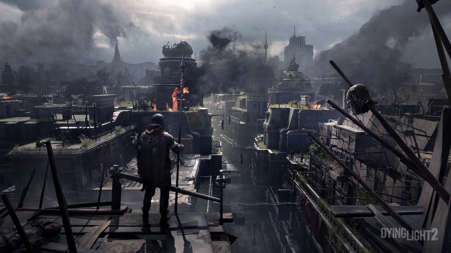
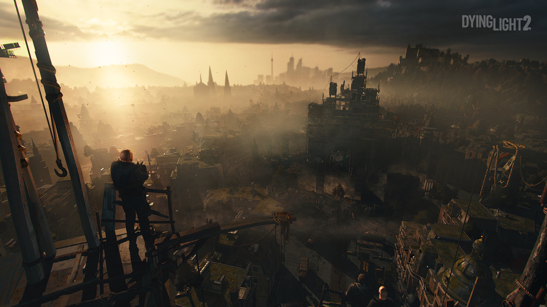
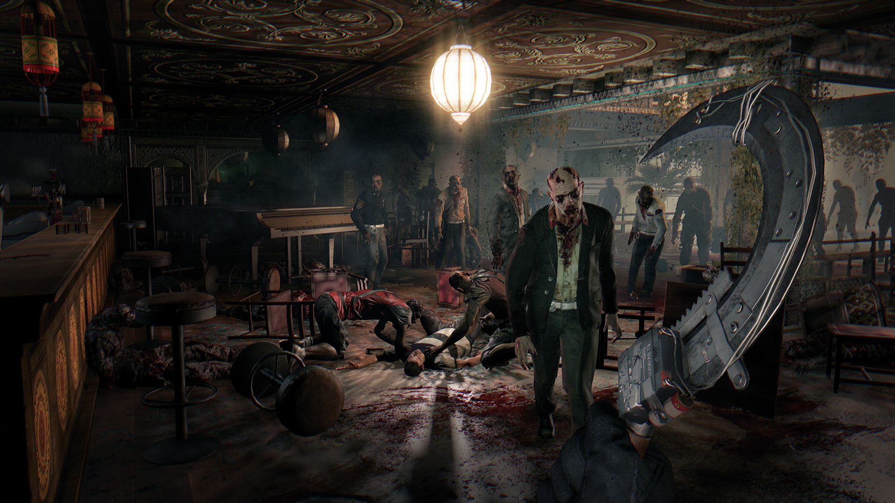

Dying Light 2 - это вторая часть популярного зомби-паркур-экшена, события которой разворачиваются в совершенно другой части света. Игроков ждут в разы возросшие масштаб и плотность событий, еще больше зомби, а также кооператив и множество других вещей. Одной из ключевых особенностей сиквела является вариативность принимаемых решений, а также изменение игрового мира последствием решений игроков. Каждое решение незначительно изменяет город, в котором разворачиваются события, что позволяет каждому игроку получить уникальный игровой опыт.
События игры разворачиваются спустя пятнадцать лет после первой вспышки вируса. За эти годы человечество сильно откатилось в развитии, электричество стало огромной ценностью, а страны потонули в анархии и беззаконии. Сценарием игры занимается один из известнейших сценаристов, Крис Авеллон, приложивший свою руку к Fallout 2, Planescape: Torment, Divinity: Original Sin 2 и другим. Сюжет в Dying Light 2 под стать окружающему миру - мрачный и жестокий, провоцирующий игроков делать выбор не между "хорошими" и "плохими", действиями, а между "плохими" и "омерзительными".

Разработка
Dying Light 2 была анонсирована на E3 2018 на конференции Microsoft. Игру представлял Крис Авеллон, геймдизайнер из Interplay, который отвечает за нарративное повествование. Действие игры будет происходить в европейском городе спустя 15 лет после эпидемии.